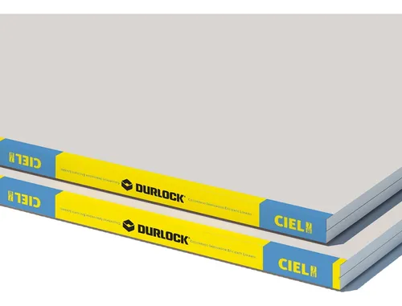
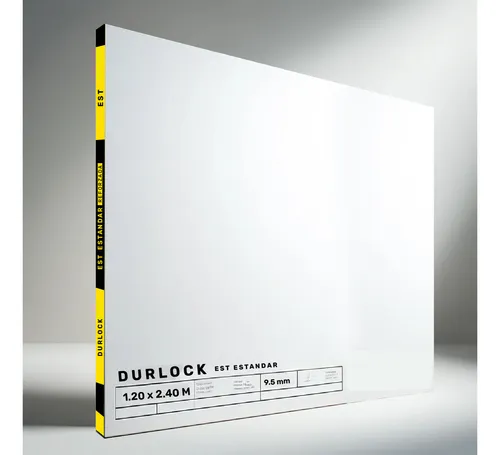
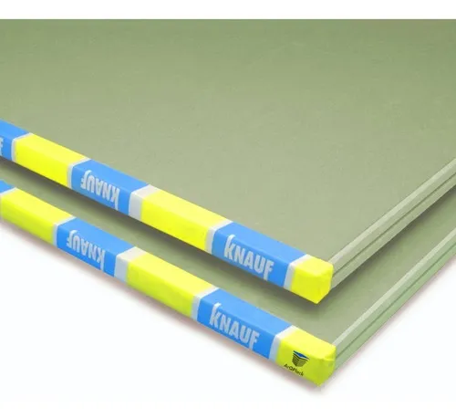

Placas de Yeso para pared de interiores
Características
- Medidas estándar: 1.20m x 2.40m
- Espesor: 12.5mm
- Resistente al fuego
- Excelente aislación acústica
- Fácil instalación
Descripción
Las placas de yeso son el elemento fundamental en la construcción en seco. Ideales para paredes, cielos rasos y revestimientos. Su composición y estructura proporcionan excelentes propiedades de aislación térmica y acústica.
Aplicaciones
- Paredes divisorias
- Cielos rasos
- Revestimientos
- Proyectos residenciales y comerciales

Pilas de 9.5mm para cielos rasos
Características
- Medidas estándar: 1.20m x 2.40m
- Espesor: 9.5mm
- Color blanco
- Excelente aislación acústica
- Material Yeso
Descripción
Esta placa de yeso, modelo Standard, ofrece medidas de 120x240 cm y un espesor de 9.5 mm, ideal para cielorrasos, paredes y revestimientos en ambientes secos como dormitorios, oficinas y locales comerciales.
Aplicaciones
- Cielos rasos

Placas para baños y cocina
Características
- Medidas estándar: 1.20m x 2.40m
- Espesor: 12.5 mm
- Material de yeso de alta calidad para una durabilidad superior.
- Resistente a la humedad
- Color verde
Descripción
La Placa Verde Antihumedad Knauf de 12,5mm es la solución perfecta para combatir los problemas de humedad en tu hogar o lugar de trabajo. Con dimensiones de 1,20x2,40, esta placa de alta calidad es ideal para cualquier espacio, brindando una solución efectiva y duradera.
Aplicaciones
- Paredes divisorias
- Para baños y cocina
- Proyectos residenciales y comerciales